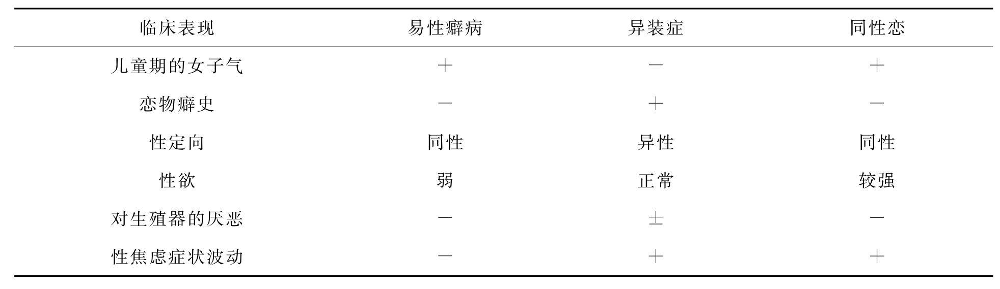

古往今来，人们均按照社会约定俗成的用于表现男女差别的社会行为模式来完成自己的性角色。但那种背离自己性别身份的人在社会里亦不难见，他（她）们的性情和行为常常与众不同。日常生活中，人们称呼那些在性情和行为上不那么符合男人标准的男孩子为“娘娘腔”（英美国家称为Sissy）；称呼那些在性情和行为上不那么符合女人标准的女孩子为“假小子”（英美国家称为Tomboy）。社会上对于那些行为超出性别范围的女孩子的态度比较容忍，甚至认为这是天真可爱的表现，是与众不同和有出息的表现。而那些“娘娘腔”的男孩子却没有这么幸运。他们的行为举止让人感到恶心难受，是没有出息的表现，往往成为人们讥讽嘲弄的靶子。从转归上看，女孩子虽然常有某种程度的女童男性化，但是，一般在青春期以后都能接受她由遗传或解剖特点所规定的女性身份。也就是说，“假小子”一般在来月经之后以及女性第二性征发育之后，都能面对现实，表现出几分温柔与稳重，并能成为“贤妻良母”。对男孩子来说，跨性别行为却是一个严重的问题，是一种严重的性别身份确定的紊乱，往往是同性恋或易性症的前兆，必须尽早地加以注意及矫治，切不可认为这是个会自行消失的现象而让它拖延下去。性别身份障碍主要有易性症（性别转换症）、双重角色异装症及儿童性别身份障碍等。由于国际分类与美国分类略有不同，现分别介绍如下。
渴望像异性一样生活，被异性接受为其中一员，通常伴有对自己解剖性别的苦恼感及不相称感，希望通过激素治疗和外科手术以使自己的身体尽可能地与所偏好的性别一致。诊断要点：转换性别身份至少应持续存在2年以上才能确立诊断。且不应是其他精神障碍如精神分裂症的症状，也不伴有雌雄同体、遗传或性染色体异常等情况。
个体生活中某一时刻穿着异性服装，以暂时享受作为异性成员的体验，但无永久改变性别的愿望，也不打算以外科手术改变性别。在穿着异性服装时，并不伴有性兴奋，这一点可与恋物性异装症相鉴别。包含：青春期或成年期性身份障碍，非性别转换型。不含：恋物性异装症。
这一障碍通常最早发生于童年早期（一般在青春期前已充分表现），其特征为对本身性别有持续的、强烈的痛苦感，同时渴望成为异性（或坚持本人就是异性）。持续地专注于异性的服装和（或）活动，而对本人的性别予以否认。通常认为这类障碍相对少见，较常见的是与程式化性角色行为不一致的状况，两者不应混淆。只有正常意义上的男性或女性概念出现了全面紊乱时，才可考虑儿童性别身份障碍的诊断。仅有女孩子像“假小子”、男孩子“女孩子气”是不够的。若已进入青春期，此诊断便不能成立。诊断要点：必要的诊断特征为，儿童出现根深蒂固的、持续的成为异性的渴望，伴有对自身性别的行为、特性和（或）衣着强烈的排斥。典型情况下，在入学前就首次出现；要想确立诊断，这一障碍必须在青春期前就已十分明显。在男女两性中，都可能会出现对本身性别的解剖结构的否认，然而上述表现较少见，也许很罕见。性别身份障碍的儿童有一个特点，即尽管他们因与家庭、好友的期望相冲突而苦恼，也因所受到的嘲笑和（或）排斥所痛苦，但他们却否认因性身份障碍而苦恼。对这种障碍的知识，男孩多于女孩。典型的情况是，从上学前数年，男孩就开始沉湎于那些通常属于女性的游戏和活动，而且常常偏爱穿女孩的服装或妇女的衣着。然而，这种换穿异性服装的举动并不会引起性兴奋（并不像成年人恋物性异装症）。他们会有极强的欲望，想参加女孩子的游戏和消遣，洋娃娃常是他们钟爱的玩具，而女孩子一般是他们偏爱的玩伴。上学的头几年，这些孩子会越来越被人孤立，这种情况在童年中期达到顶峰，其他男孩会羞辱、嘲笑他们。明显的女性化举止在青春期早期会有所减轻，但随访研究显示，性别身份障碍的男孩中，有1/3～2/3在青春期及青春期后显露出同性恋倾向。然而，在成年后表现为性别转换症的却极少（尽管有报道说，大多数成年性别转换症者在童年都有性别身份问题）。临床工作中所碰到的性别身份障碍的女孩少于男孩，但这一性别比率在总人口中是否适用尚不得而知。像男孩一样，女孩也通常较早表现出热衷于一般属于异性的一些行为。典型情况下，有性别身份障碍的女孩结交男伙伴，对体育运动和激烈争斗的游戏极为喜爱。她们对洋娃娃没有兴趣，对在假装的游戏如“爸爸和妈妈”或“过家家”中扮演女性角色也不屑一顾。有性别身份障碍的女孩在学校中并不像有性别身份障碍的男孩那样受到同等程度的孤立，然而她们在童年后期或青春期也会遭到嘲笑。大多数女孩在接近青春期时，会放弃对男性活动和服装过分张扬的追求，但是一些人会保留男性性别认同，并逐渐显露出同性恋的倾向。性身份障碍伴有对本身性别的解剖结构的持续排斥的情况是罕见的。不含：自我不和谐的性取向，性成熟障碍。
包含：性角色障碍，未特定。
（1）持久而强烈地为自己是个女孩而苦恼，诉说希望自己是个男孩（并非由于重男轻女的文化所影响），或坚持她是个男孩。
（2）具有以下①或②两者之一：①固执地厌恶标准女式服装，并坚持穿老古板的男式服装，如男孩的内衣裤及其他物品。②坚决否认女性的解剖结构，至少具有以下之一：a.断言她有阴茎，或将要长出阴茎；b.拒绝蹲着或坐着排尿；c.断言她的乳房不会发育，也不会有月经。
（3）此女孩未及青春期。
（1）喜爱女性活动，如喜爱女式服装或作女性装扮；特别愿意加入女孩子的游戏，并拒绝男孩的玩具、游戏及活动。
（2）坚决否认男性解剖结构，反复地断言至少以下之一：①他将来长大会变成一个女人（不仅只是女人的角色）；②他的阴茎或睾丸极其讨厌，或将会消失；③如果没有阴茎或睾丸则更好。
（3）此男孩未及青春期。
1.持久地对自己解剖上的性别感到不舒服及不适应。
2.至少有两年坚持要去掉自己的第一、第二性征，并要得到异性的这些性征。
3.此人已达青春期。
1.持久或反复地对自己解剖上的性别感到不舒服及不适应。
2.固执或反复地以异性的角色而穿着打扮（或在幻想中，或在现实生活里），但其目的并不是像异性装扮症那样为了性兴奋。
3.至少有两年不像性别转换症那样坚持要去掉自己的第一、第二性征，以及得到异性的这些性征。
4.此人已达青春期。
1.坚持穿着异性服装的儿童，又不具备儿童期性别身份障碍的其他标准。
2.与紧张刺激有关的成人暂时性异装行为。
3.性别转换症临床相的成人，但时间少于两年。
4.坚持阉割或切除阴茎，却又不想得到异性的特征。
案例1 性别转换症
“我今年24岁，是一位地道的男同性恋者，我生在农村，姐弟三个我最小，在家里一直受宠爱，使我养成了依赖性强，胆小，害羞的女孩性格，上小学时总爱和女孩玩，上中学时尽管和女孩分开了，但是和男同学在一起时就总是觉得不自在，并且见了那些英俊的男子或老师就会耳热脸红、心跳加快，有时在梦中也时常梦见他们。大学没考上，但有机会在大学里进修了两年，我学会了织毛衣，别的男孩子都去会女朋友，我却从没有这种想法。我也从未去过公共浴池，因为男人的每一部位都令我情不自禁。现在我踏上岗位快三年了，有人介绍了一个女朋友，三个多月来只拉了一次手，还是她主动的，我没有一句情话，没有其他要求和动作，因为我一点也爱不起来，尽管如此，她对我还是很好的，我就更内疚了。我觉得对不起她，对不起父母，我也受不了社会的舆论，我有千言万语却无法向任何人倾诉，我觉得我活在世上的确太苦了，我期望有一天能过上真正的女人的生活，这就是我，一个患者的自白。我有一个强烈的愿望是改变我的性别，不知哪个地方能做这种变性手术？术后是否能和女人一样过性生活，以及生儿育女。当我写完这封信，我觉得您已是我最要好的朋友了，因为我的知心话只有向您倾诉。”
案例2 非性别转换症型性别身份障碍
女性，15岁，自述：“我今年15岁，是一个年纪轻轻的姑娘，不知怎的，每当我看见自己腋下和阴道外部的毛及稍稍突起的乳房时，就有一种不高兴，特别是月经期间。说真的，我是很希望自己变成男性的。我也曾多次梦到自己变成了男性。我申明：我从来没有产生过重男轻女的思想。这种心情不知是因啥产生的，但绝对不是重男轻女的封建思想在作怪。不骗你们说，我是很喜欢女同学的，但就不喜欢自己是个女性。”
案例3 双重角色异装症
男性，43岁，自幼年起，他母亲就把他打扮成女孩的模样。儿时随父亲学画人像，特别喜欢画美女像，养成女孩的性格，喜穿款式新颖、色彩鲜艳的女装，喜留长头发，并经常改变发型。在上学期间及当兵期间，虽白天不能穿着女装，每至夜间即从里到外全部换上女装，并抹口红、涂胭脂、学女人步态。由部队转业后，购置大量女式时装、乳罩、月经带、长袜、女式皮鞋等，又缝制丝绒小垫子垫于臀部，在乳罩里填塞海绵，涂脂抹粉，打扮得花枝招展，公开招摇过市。他还为自己拍摄了许多女妆时的相片，闲时自我欣赏。虽然家里人及同事们都反对他的装束，他却满不在乎，说：“这是个人爱好”。阴茎能勃起，并时有遗精。虽交了几个女友，均因不喜欢他的装束打扮而分手。他现仍希望能找到一个称心的女人而结婚。他从无同性恋行为，也没有转变性别的要求。
异装症和性别转换症有源于同性恋者，有主要是异性恋者，也有同时为两性恋者，因而可分为同性恋的异装症、同性恋的性别转换症、异性恋的异装症和异性恋的性别转换症几种。对异性恋的异装症与异性恋的性别转换的区分，有时十分困难。因为它们是个连续的过程，而不是互不相干的两种情况。在行为表现上和在性的取向上，它们很是相似，只不过后者强烈地希望变成异性，并要求做转变性别的手术而已。虽然它们被称为异性恋的性别转换症和异性恋的异装症，实际上其中大多数为两性恋者。他们照样能结婚，并过上家庭生活。只有很少数的一些人乔装打扮成女人之时，才惹得不明底细的男人心动。异性恋的异装症及性别转换症与同性恋者有下列不同。
异性恋的异装症者和性别转换症者虽喜作异性穿着打扮，但多穿戴如普通异性的日常便装。男性同性恋的异装症者和性别转换症者则往往浓妆艳抹，发式时髦，追求外围情调，以显示自己或吸引男人。
异性恋的异装症者和性别转换症者不着异性装束时，若是男人，在行为举止上与正常男人一样。在公共场合，若不注意观察，很难发现他们会有性身份障碍。即使他们着异性服装，大多数人也不会改变自己的行为举止。他们不会像异性装扮的同性恋男人那样模仿女人讲话的腔调和姿态。因而，粗略一看，某些异性恋的异装症者和性别转换症者只不过是个男子气很足的男人穿上女人的服装而已。同性恋的异装症者及性别转换症者则不同，即使他们不着异性装束，许多男人也表现得女里女气的，甚至扭捏作态。
许多异性恋的异装症者和性别转换症的男人只存在与他们生物学性别不同的性别感，而几乎不表现女性的行为特征。除了有异性的性取向之外，他们往往爱好体育活动，不喜欢跳舞和表演，不注意化妆打扮，而且他们还很难学会正确的分妆和挑选合适的服装。同性恋的异装症者和性别转换症的男人特别喜欢而且精于梳妆打扮。他们往往自己设计、自己裁制许许多多女装。
异性恋的异装症者和性别转换症的男人往往选择传统上由男性来做的工作，如工程师、机械工、推销员等。同性恋的异装症者和性别转换症的男人则往往做理发师、美容师、裁缝或娱乐圈里的工作。
异性恋的异装症者和性别转换症的男人通常不会像同性恋者那样公开跳舞或表演。同性恋的男人的女子气愈浓，则愈喜欢这些活动。目前有数以百计的同性恋的异装症的男人和性别转换症的男人在美国及欧洲的夜总会里作色相表演。
自恋症（autogynephilia）：类似于恋物症及异装症。这种男性是通过幻想或认为自己是一个女人，以此来达到对性欲的唤起，但他实际上并不渴望通过手术改变性别而成为女人。性生活中通过幻想自己是一个女人来获得性高潮，并希望自己的伴侣作为男性处于主动地位来对待自己。
成人的性别转换症有原发性及继发性两种情况。
自幼年起即已开始。有人认为男性性别转换症与女性性别转换症在病因上有所不同。他们认为，男性性别转换症者未能完全与母亲区分开来，以发展一个男性的身份来看待自己。按照此种说法，母亲如果与男孩在身体上接触过多、过于密切、时间过长，给男孩过多的保护和照顾，就会造成男孩对母亲的性别身份接受得过多，从而妨碍了男孩对父亲的认同作用，使得男孩形成了女性的身份，早期的跨性别身份就由此造成了。此时，除了有性别转换之外，通过心理测验检查是不会发现有任何精神障碍的表现的。女性原发性性别转换症的发展则与上述情况不同。从逻辑上看，早年过长地与母亲共生，不会影响女性的性别身份。虽然对这种女孩的研究不多，但有证据表明，她们的母亲往往情绪抑郁，感情上难以沟通。于是，在早年，她们只得将感情投向照顾她们的父亲（通常为男子气十足的、不会照顾妻子的男人）。她们模仿父亲的角色，学着像父亲一样的做事，并且由此而得到鼓励和表扬。此外，她们的父母往往自她们降生之时起就不喜欢她们，不娇惯她们，并为她们起了一个不男不女的名字。
可出现在成人期的任何阶段，甚至在老年期。在此之前，他们过着符合自己解剖性别的生活，并结婚、生儿育女。嗣后，由异装症、同性恋、性受虐症、精神分裂症等继发产生性别转换症。某些十分女子气、好穿女装的同性恋男人特别想变成女人身。他们之中，大部分人不断地纠缠医生，要求给他们做性别转变手术；有些人用异性性激素；有些人因性别上的苦恼发展到企图自杀。原发性与继发性性别转换症的治疗处理：对性别转换症应进行以精神科为主的综合治疗，最好能在专门治疗性别身份障碍的诊所里进行。医生应理解这种情况，并督促这种人就治。但是，所有旨于纠正青年和成年人的原发性性别转换症的努力，终归几乎不可避免地要以失败而告终。只有极个别的原发性性别转换症者用行为疗法有效。矫治这种人特别困难之处，还在于这种人几乎没有一个愿意矫治他们的性别身份障碍。矫治继发性性别转换症要比矫治原发性的容易，但也会遇到相当的阻抗。当性别转换症继发于严重的精神疾病，或极可能发生自杀行为之时，不论这些人愿意与否，都应安排紧急住院治疗。这时，首先需要处理的是精神疾病和自杀观念，然后才能考虑到他们在性别要求上的烦恼。然而，如果一个人只是要求做转变性别的手术，而其他方面的功能都没有毛病，就只能针对性别转换进行安排了。为了鉴别原发性性别转换症和继发性性别转换症，需要做仔细的精神检查和躯体检查，以明确精神障碍的性质和程度，排除雌雄同体或其他器质性病变。
双重角色异装症者的性爱指向往往是正常的。他们之中，大多数有正常的异性恋关系。他们之所以作异性打扮，是源于性别身份障碍，感到只有这样才符合自己的性别身份。恋物性异装症是指男性穿着异性服装而取得性满足的一种癖好。他们穿着异性服装只是为了得到性满足（表16-1）。关于这三者的鉴别诊断，可根据表16-1的内容进行。
表16-1 男性易性癖病、异装症、同性恋三者之间的鉴别
案例4 恋物性异装症
男性，22岁，出生于干部家庭，由于父母感情不和，经常吵架，很少从父母那里得到温暖。只有姑姑非常疼爱他。他常幻想能有一个温暖的家庭。11岁上小学五年级时，不知为何一见女式圆口鞋就心慌意乱、不好意思，好像这种鞋代表着什么似的。越是不好意思，就越想多看几眼。在卖鞋的地方，常不由自主地停下来看圆口鞋。半年前，在一本时装杂志上看到一个脚穿圆口鞋、身着漂亮服装的妇女，服装美衬托出鞋更美，一下子便被迷住了。当时想，他若穿上这鞋和衣服也一定很美，一阵阵脑子发热、手心出汗，极想得到这些妇女衣物，而且是被女人用过的。从此，开始偷窃妇女用过的乳罩、短裤、月经带、长袜、裙子、鞋子等。到手后反复抚摸闻嗅，感到这些物品对他有特殊的吸引力。常常在家里一一穿上后照着镜子自我欣赏，觉得自己很美，此时心情异常的兴奋激动。有两次着女装在街上主动与女人攀谈，心里非常痛快。自述：“我对她们没有邪念，也没有非礼行为。我对女性一直没有兴趣，平日也不跟女的来往接触。可是，她们的东西使得我异常激动而且一冲动起来就控制不住，不干不行，既顾不得害怕，又不嫌脏”。在半年的期间，他共窃得女袜100余双，女鞋7双，裙子14条，另有不少裤衩、乳罩、月经带、连衣裙……。
（杨华渝）
某些精神病，如精神分裂症和抑郁症（depression）患者常有固定不变的性别幻想，但精神病患者一般均有行为、知觉、思维、情感和智能方面的障碍，通过详细的精神检查均能排除。
反社会病态是指各种异常社交行为表现的一种状况。反社会病态者是指那些自童年或青少年开始即有失职和犯罪行为而后又无自责悔恨之心、病理性说谎、不负责任、难以维持人与人之间关系的这样一群人。他（她）们当中也常有要求转性手术者，目的是企图通过这种方式成为所谓的“知名人士”，并不是真正想变为异性。通过调查不难发现，这些人一般都有劣迹。
有很多学者报道，异性装癖和要求改变性别者也常发生在苯异丙胺中毒的状态下和颞叶癫痫患者中。但经过详细询问病史和必要的临床检查即可排除。